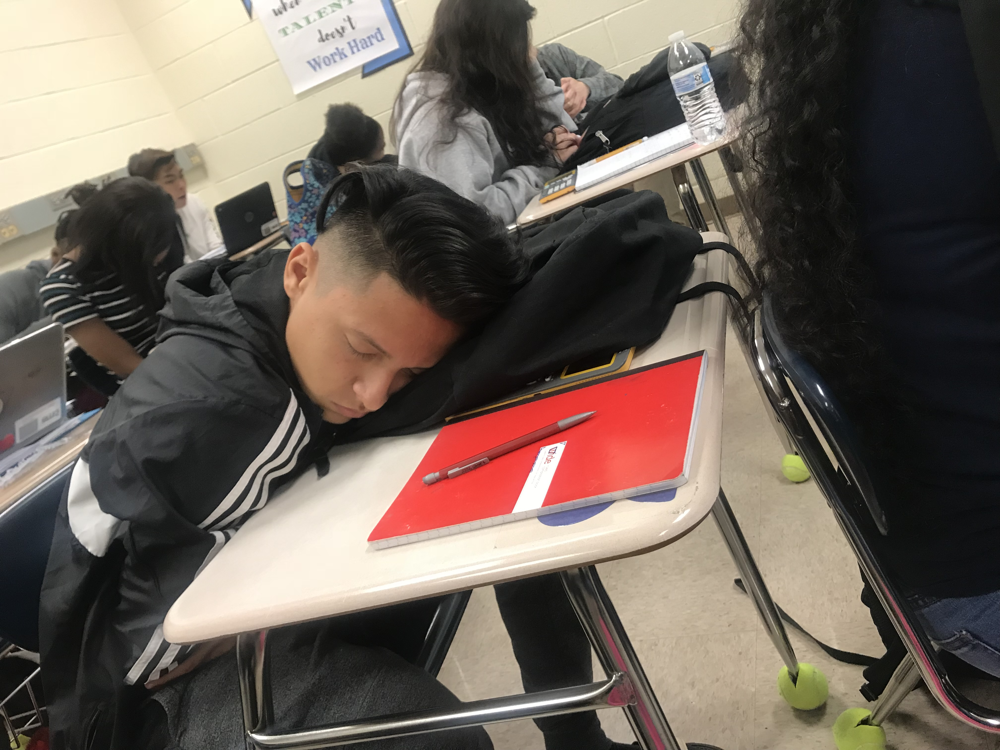

My senior year in highschool doing what i do best!
Personal background: Im 18 i was born and raised in Charlotte all my life and my parents are Mexican.
Professional background: i have worked with my stepdad remodeling and painting houses since i was 8, i started my own detailing business at 16 and i have been a waiter at Showmars for the past two years.
Academic background: I graduated from high school.
Background in the subject matter of this course: This is my first time with anything regarding web design and coding
Primary computer platform: Windows 10 at my house.
Reason for taking each course:
CTI-110-80: I am taking all of these courses to get a certificate to be able to get a job at atrium with my brother.
CSC-119-50: Programming Orient: I am taking all of these courses to get a certificate to be able to get a job at atrium with my brother.
CSC-139: Visual basic programming: I am taking all of these courses to get a certificate to be able to get a job at atrium with my brother.
CTS-115-52: Info Sys Business Concepts: I am taking all of these courses to get a certificate to be able to get a job at atrium with my brother.
WEB-110-01: Internet/Web Fundamentals: I am taking all of these courses to get a certificate to be able to get a job at atrium with my brother. WEB110 Course Contract
Funny story or interesting item about yourself to remember you by: One funny story about me is when i was caught speeding by the police and when he came up to the window i was playing bad boys as loud as i could. (He let me off with a warning he found it funny!) i also wrapped my car in christmas lights last year.
I'd also like to share: Im a big computer guy i have my own custom built gaming pc and i am also an even bigger car enthusiast! (I drive a nissan 350z)